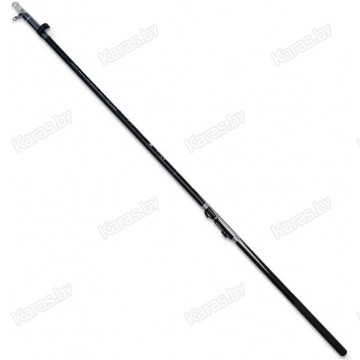

Рыболовный магазин
Пн-Пт:
с 9.00 до 20.00/
Сб.
с 9.00 до 18.00/
Вс. выходной
Главная
УДОЧКИ
ЛЕСКА
КРЮЧКИ
ПОПЛОВКИ
УДОЧКИ
КОРМУШКИ
НАЖИВКА
Удочка с кольцами Dayo Cayman, углеволокно, 4 м, тест: 10-30 г, 245 г
Стоимость: 45.45 руб

Удилище фидерное Mifine Fusion Feeder, углеволокно, 2.7 м, тест: 60-120 г, 189 г
Стоимость: 72.99 руб